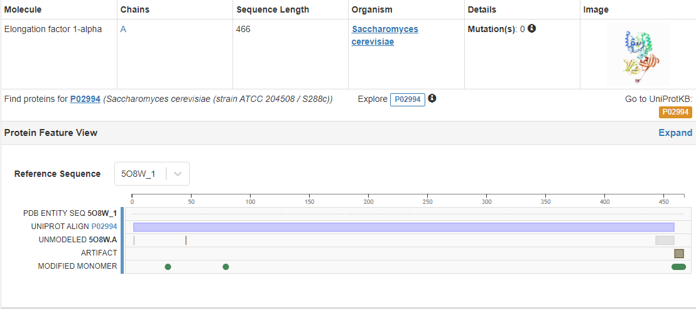
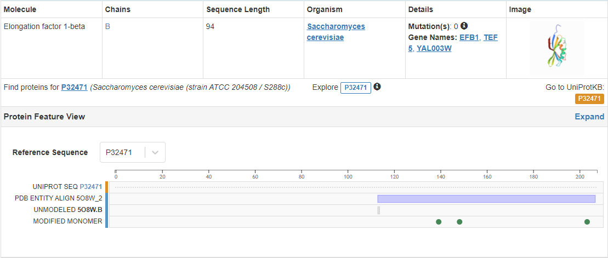

Once the molecule file is fully loaded, the image at right will become live. At that time the "activate 3-D" icon  will disappear.
will disappear.
5O8W
Yeast Elongation Factor Complex
Classification: TRANSLATION
Organism(s): Saccharomyces cerevisiae
Mutation(s): No
Method: X-RAY DIFFRACTION
Resolution: 1.67 angstrom
Elongation factor 1-alpha: ()

Elongation factor 1-beta: ()

Ligands PGE groups TRIETHYLENE GLYCOL C6H14O4: (, )
Ligands GLN groups GLUTAMINE C5H10N2O3: ()
Zoom in
Spacefill
Choose Background Color
Source:
https://www.rcsb.org/structure/5O8W
http://jmol.sourceforge.net/demo/
輸出至在2021年1月19日上的網頁功能 Jmol 14.31.24 2021-01-13 21:13 可產生網頁架構及JavaScript。